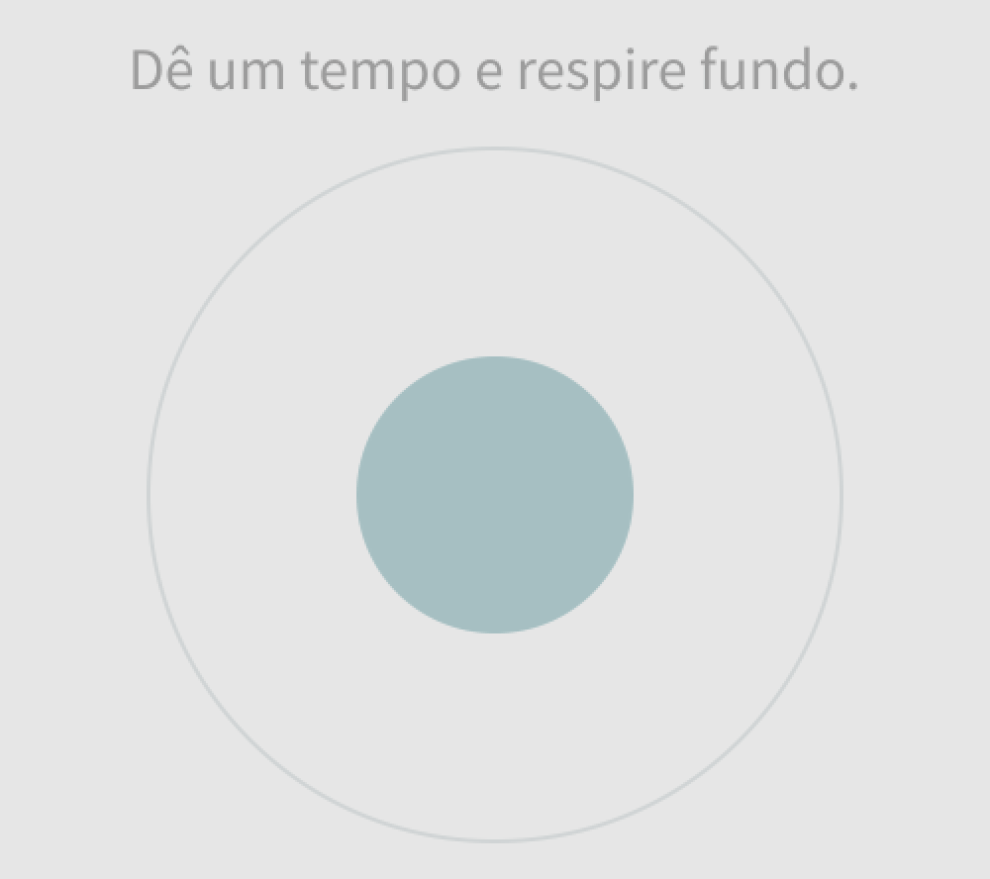

Se você sofre ou já sofreu de ansieade assim como eu, deve saber o quanto é difícil e as vezes até desafiador conviver com essa sensação.
A boa notícia é que existe uma técnica simples pra te ajudar com essa questão. Isso mesmo, técnicas que vão te ajudar a relaxar agora mesmo e fazer você se sentir melhor.
Essa simples imagem acima pode te ajudar, basta que você pare por pelo menos 5 minutos e inspire profundamente, segure e expire devagar.
Faça isso diariamente e você verá o quanto melhor você se sentirá. A gente tem uma vida muito corrida e as vezes é difícl parar, mas os benefícios dessa prática são inúmeros. Experimente parar agora, focar na imagem acima e relaxar agora.
Como não sou especialista, recomendo como melhor solução buscar ajuda de médicos ou psicólogos para te ajudar a ter uma vida livre dos sintomas causados pelo transtorno da ansiedade.
Não se preocupe. Confie em quem estudou sobre esse tema e pode te aconselhar melhor e te preescrever tratamentos, sejam sem ou com medicações.
Separei alguns artigos apra você continuar a leitura e descobrir mais forma de relaxar.
Um abraço e fique bem!